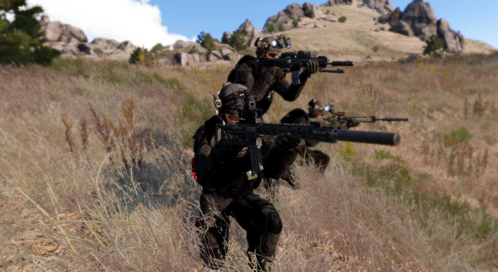
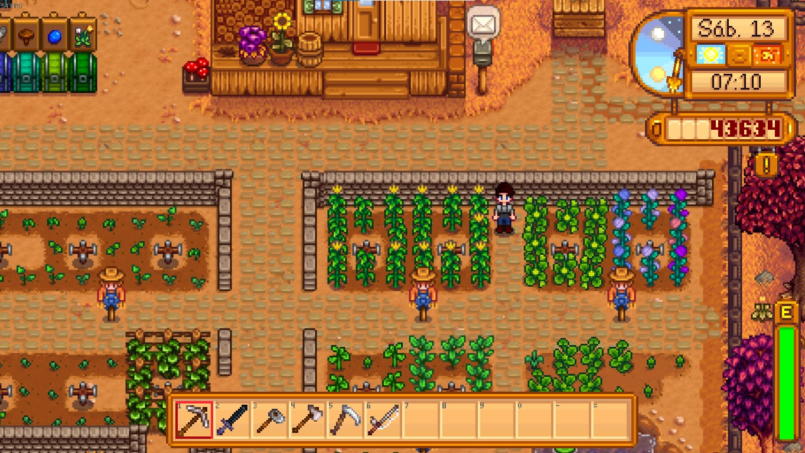

Sou o Gabriel Teixeira Mori, tenho 19 anos e estudo atualmente na UTFPR no curso de Sistemas para Internet, além de servir no serviço militar obrigatório no Tiro de Guerra 05-015. Moro em Assis Chateaubriand e sou técnico em Eletromecânica pelo IFPR.
Atualmente não trabalho, pois o Tiro de Guerra (TG) e a faculdade já ocupam grande parte do dia, fora a prática de pilates duas vezes por semana. Por isso, o que sobra do dia é usado para fazer tarefas, exercícios físicos e princpalmente jogar no computador.
Entrei no cursos de Sistemas para Internet por causa do interesse em programação, que originou-se no IFPR, já que no curso de eletromecânica temos muitas oportunidades de programar Arduino, e também meu TCC envolveu programação, porém, nunca me imaginaria programando antes de entrar para o IF.
Quando tenho tempo livre gosto de:
Também gosto muito de baixar mods (modificações feita por jogadores) de forma intensiva quando instalo um jogo , tudo isso começou no minecraft e mantém até hoje. Gosto muito de seguir guias de mods e ir adicionando mods que me agradem, é muito bom ter a sensação de comprar algo que já é bom e ir melhorando cada aspecto e principalmente adicionando conteúdo , pena que demora MUITO.
Tenho interesse em: Tecnologia; computadores e perifércos; um pouco de filosofia; geopolítica e assuntos militatares.
Foto Arma 3
Foto da minha Fazenda do Stardew Valley
